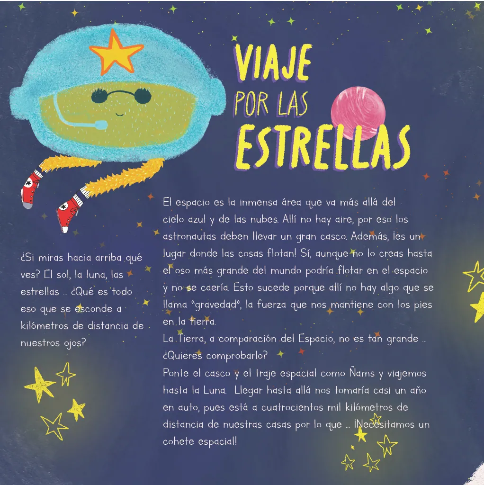
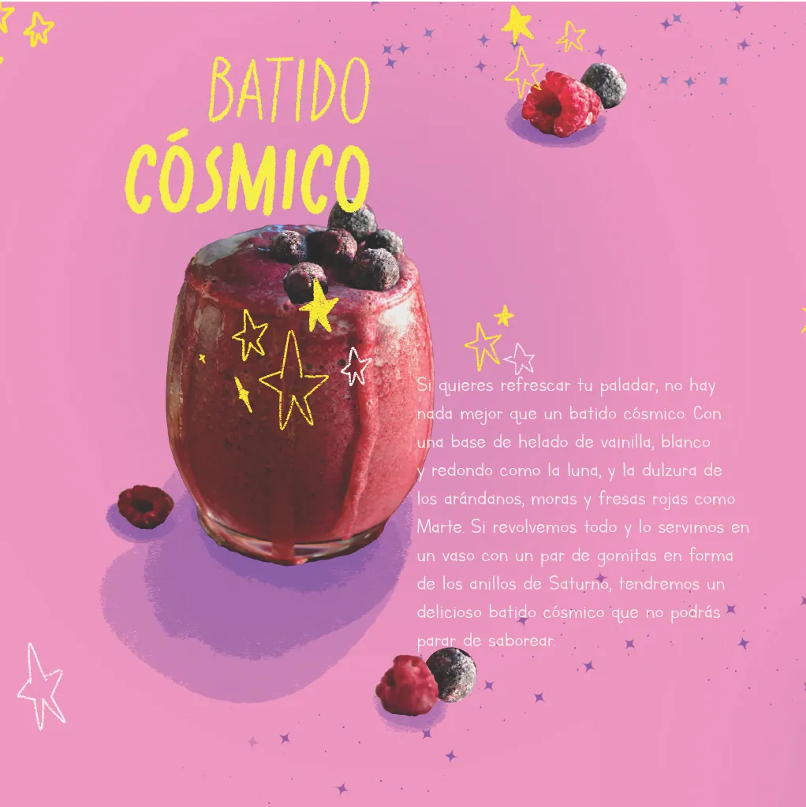
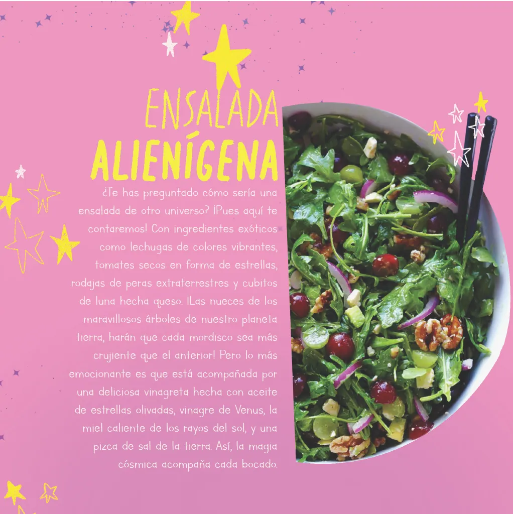
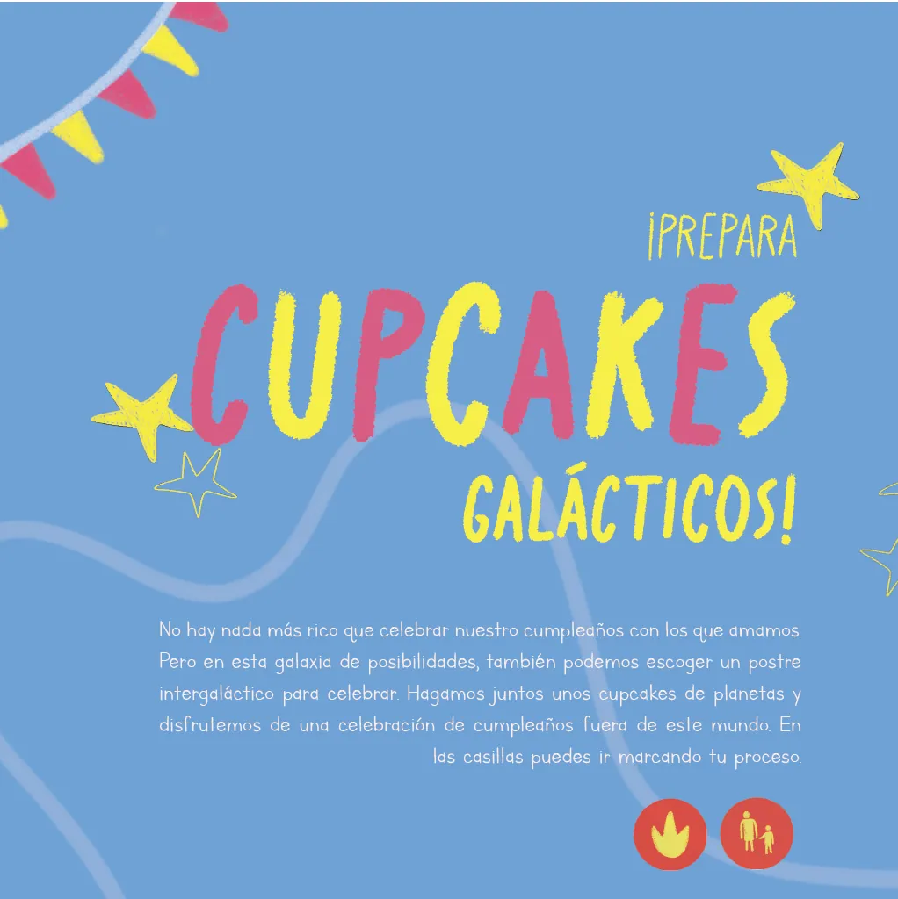
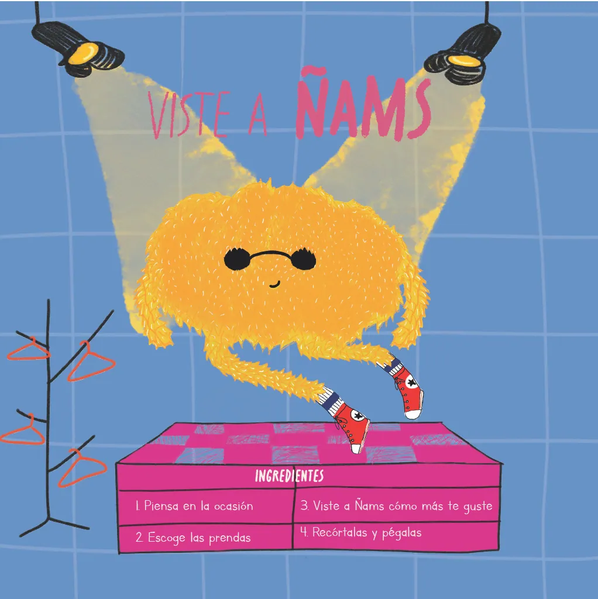
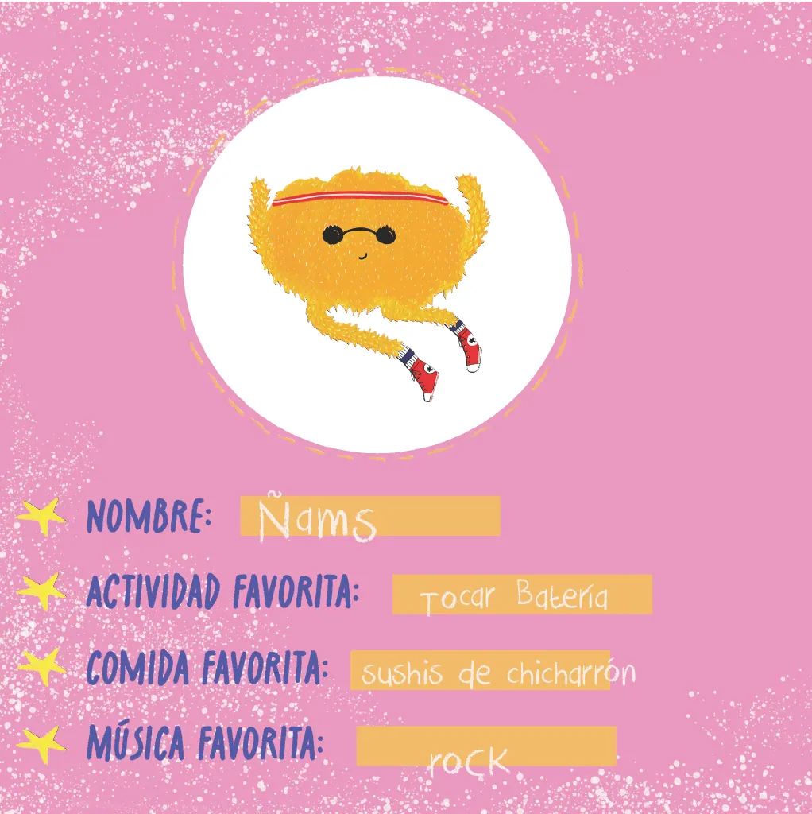
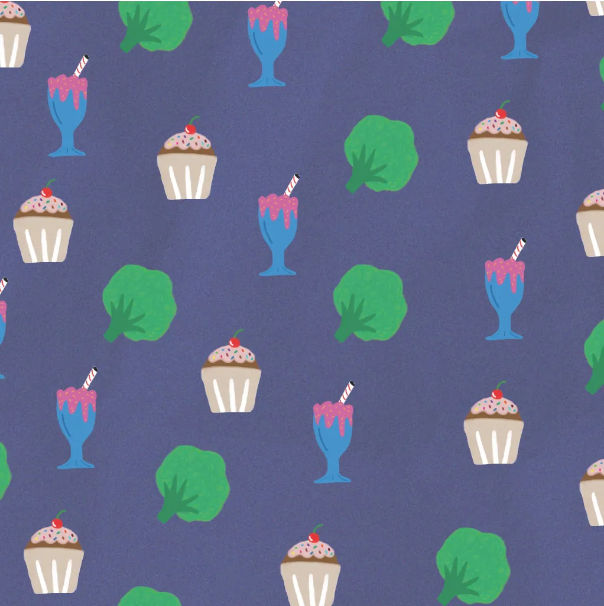
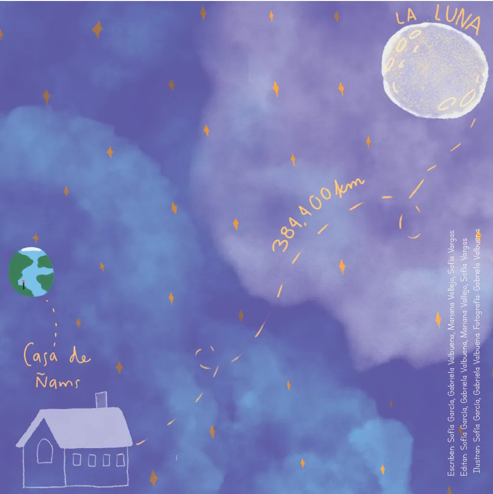

proyecto
El mundo de Ñams
Un libro ilustrado —edición espacial— con personajes, recetas galácticas y un viaje por las estrellas. (Texto provisional)

Ñams es un personaje peludo y amarillo que cocina, viaja y explora. El libro alterna páginas de historia con recetas que se pueden hacer en casa. (Texto provisional)







Recetas para hacer en casa y leer en el espacio.

